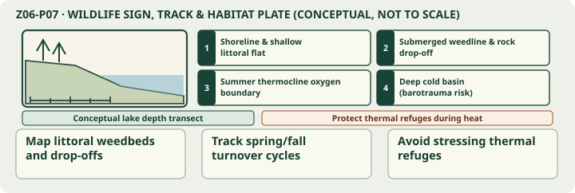

Z06-P07 · Hunting and fishing · New manuscript
Minnesota Freshwater Habitat Zones and Seasonal Fish Behavior
Understand seasonal water-temperature stratification, dissolved oxygen, and littoral-to-deep habitat shifts in northern lakes.
When it applies · Ecological context for inland lakes, reservoirs, and cold-water rivers.
Equipment · Lake bathymetric map, seasonal water-temperature observations.

Actions
- Understand that northern lakes stratify in summer into warm sunlit upper water and cooler deeper water separated by a thermocline, mixing during spring and fall turnover.[H06]
- Recognize how seasonal spawning, insect hatches, and dissolved-oxygen levels shift fish between shallow littoral flats, weedlines, and deeper structure.[H06]
- Avoid targeting cold-water fish like trout during severe summer heat waves when warm surface water causes high catch-and-release mortality.[H01, H06]
Failure recognition · Assuming fish occupy identical depths year-round or catching deep/warm-stressed fish casually causes severe barotrauma and thermal mortality.[H06]
Verify · Habitat observations account for season, surface water warmth, and conservation limits before angling.[H01, H06]
Stop or change course · Stop catch-and-release fishing for cold-water species during high water temperatures or low dissolved-oxygen stress events.[H01, H06]
Evidence and editorial notes
- H01 · Minnesota DNR · Minnesota Fishing Regulations (Current web edition)
- Section: Licensing, seasons, limits, and waterbody-specific rules · Conditions: Minnesota angling across inland, border, and designated waters
Support: Anglers must hold a valid license unless explicitly exempt and verify current season dates, possession limits, size slots, and special waterbody rules before fishing.
Limitations: Regulations change annually and differ on border waters, trout streams, and tribal/ceded territories; no emergency creates an automatic legal exemption. · Conflicting evidence: None noted.
Editorial note: Establishes Z06 fishing authority gate. · Specialist reviewer: Minnesota DNR fisheries and legal reviewer
Primary source · checked 2026-11-25 - H06 · Minnesota DNR · Fishes of Minnesota Species Reference (Current web edition)
- Section: Positive fish species identification before keeping catch · Conditions: Identifying regional game, rough, and protected fish species
Support: Accurate species identification using fin counts, mouth structure, markings, and body profile is mandatory to comply with limits and protected-species rules.
Limitations: Juveniles and hybrids can resemble restricted species; release immediately when positive identification is uncertain. · Conflicting evidence: None noted.
Editorial note: Connects Z06 identification to lawful harvest. · Specialist reviewer: Fisheries biologist
Primary source · checked 2026-11-25
Source lineage · New manuscript (Z06 P17 fish ecology) · Classification · New manuscript.